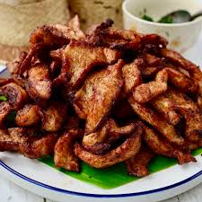

Pork Noodle Stir-Fry
This quick and easy stir-fry recipe is the perfect mid-week meal. It takes 30 minutes to make and is great for busy evenings.
Recipe Information:
Preparation time: 15 minutes
Cooking time: 15 minutes
Number of servings: 4
Difficulty: Beginner
Ingredients:
- 3 tbsp sesame oil
- 350g lean pork mince
- 350g egg noodles
- thumb-sized piece of ginger
- 3 garlic cloves
- 320g stir-fry vegetable mix
- 4 tbsp low-salt soy sauce
- 2 tsp cornflour
- 4 tbsp sweet chilli sauce
Instructions:
- Step 1: Heat the oil in a wok or frying pan.
- Step 2: Add the mince, break it up with a spoon and fry over a high heat for about 8 mins until browning.
- Step 3: While the meat cooks, boil a kettle, then pour the hot water over the noodles. Set aside for 5-10 mins to soften.
- Step 4: Add the ginger, garlic and veg to the pan and stir-fry for 2-3 mins.
- Step 5: Mix 1 tbsp soy sauce with the cornflour to make a paste. Add the remaining soy sauce, the chilli sauce and 2 tbsp water.
- Step 6: Drain the noodles and add to the pan with the sauce.
- Step 7: Cook until the sauce coats the noodles, adding a splash of water if needed, then serve.
Additional Notes:
For extra flavor, add red pepper flakes or top with grated parmesan cheese.
View recipe source:
Link to Recipe
Nutrition: Per serving
- kcal 599
- fat 19g
- saturates 4g
- carbs 74g
- sugars 11g
- fibre 5g
- protein 31g
- salt 4.2g
Ingredients:
Egg noodles
Pork

Sesame oil